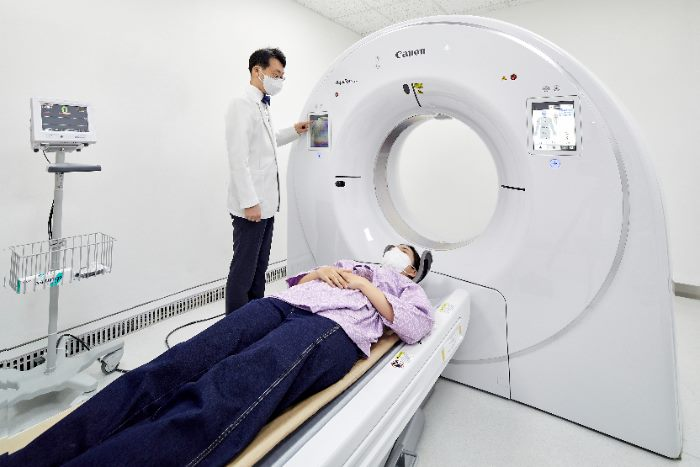
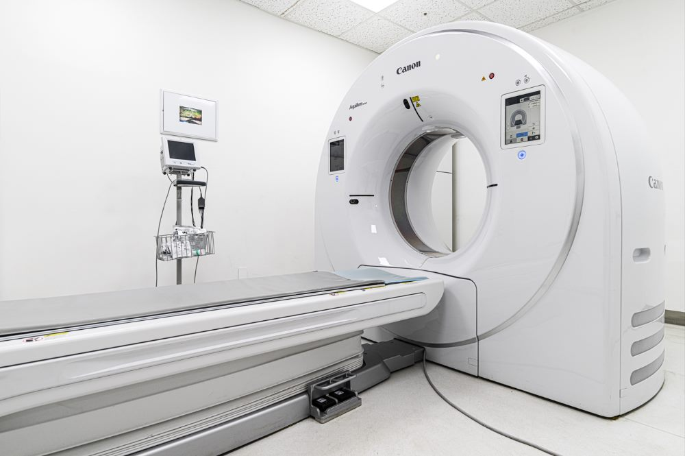

CT·영상의학센터
최신 장비로 정확하게 진단합니다
금천내일내과 CT 영상의학센터는 AI 기반 최신 CT, 초음파 장비를 갖춘
금천구 대표 검진센터로서, 정확하고 체계적인 영상검사를 제공합니다.
검사 목적과 환자 상태를 고려해 보다 세밀한 진단을 돕겠습니다.


AI CT — Aquilion Serve AI
최신 Aquilion Serve AI 인공지능 CT를 도입했습니다.
AI 기반 노이즈 감소 및 세밀한 촬영으로 방사선 피폭을 줄이고, 조영제 사용을 최소화하는
방향으로 검사합니다.
Full PACS(Picture Archiving and Communication System)를 통해 영상 자료를 판독하고 관리합니다.
Aquilion serve AI 인공지능 CT 국내 최초 도입 (2023년 CANON)
AiCE : 노이즈를 감소시키고 세밀한 촬영이 가능
DEEP Learning Reconstruction: 빠른 영상 재구성
인공지능을 이용한 최소 피폭, 최소 조영제 사용
DEEP Learning Reconstruction: 빠른 영상 재구성
인공지능을 이용한 최소 피폭, 최소 조영제 사용
Full PACS(Picture Archiving and Communication System)
영상의학과 판독전용 고해상도 판독모니터
협력병원과 원활한 협진을 위한 웹뷰어 서버 구축
협력병원과 원활한 협진을 위한 웹뷰어 서버 구축
Aplio A 등 최첨단 초음파 도입 (2024년 도입)
넓어진 초음파 조사각과 반사판으로 정밀한 초음파 영상획득
세션 단축으로 같은 시간에 더 많은 영상 획득으로 자세한 검사 가능
세션 단축으로 같은 시간에 더 많은 영상 획득으로 자세한 검사 가능
DEXA 골밀도 측정기 (2025년형 도입)
에너지가 높은 X-선과 에너지가 낮은 X-선을 두 번 촬영하여 얻은 자료로 골밀도를 계산하는 이중에너지 X선 흡수 계측법을 사용하여 골다공증을 진단
유방촬영기 DMX-600
고감도 detector와 편안한 환자자세, 조기 유방암 병변발견에 최적화
적은 방사선량! 더 정확한 진단 !!
적은 방사선량! 더 정확한 진단 !!
초음파 진료 우수 병원
대한초음파의학회 지정, 초음파 진료 우수병원 인증
초음파 검사 인증의와 영상의학과 전문의가 모든 초음파 검사를 진행
초음파 검사 인증의와 영상의학과 전문의가 모든 초음파 검사를 진행